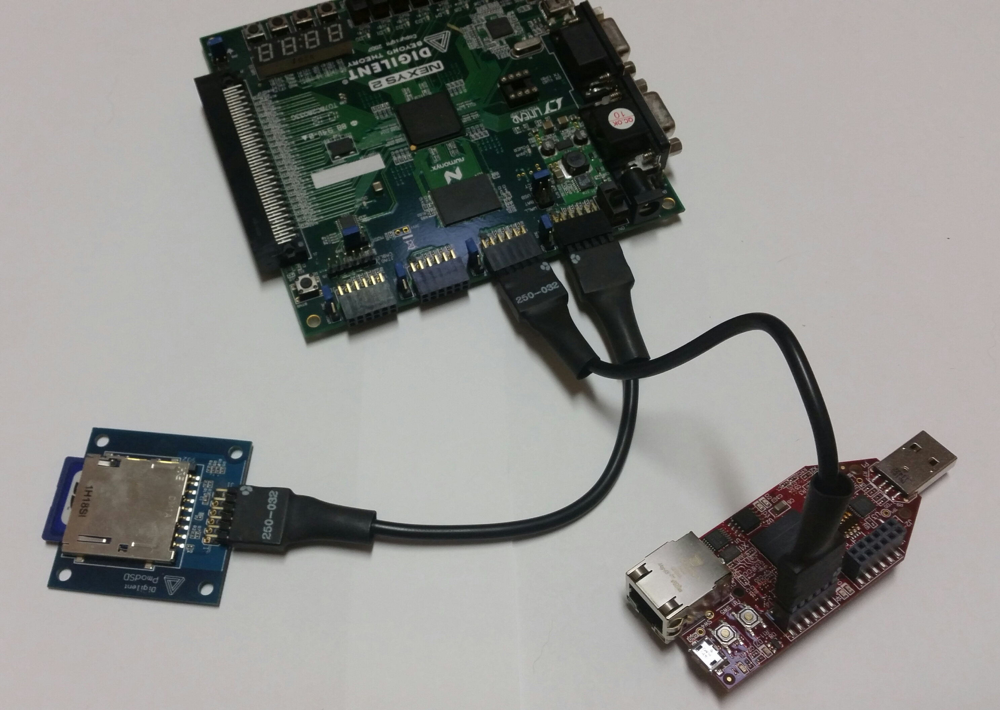
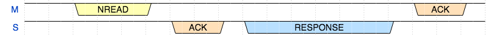
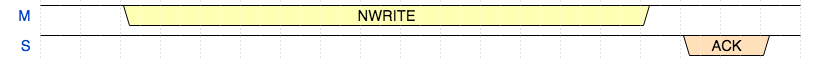

PatientIO
Towards a performant, scalable, and consistent I/O subsystem for the Kestrel-3.
Samuel A. Falvo II <kc5tja@arrl.net>
2015-Jul-27
# DISCLAIMER
This talk does not describe what already exists.
This is a talk about what I'm thinking about now.
All material in this presentation is subject to change at any time,
for any reason.
As usual, to keep up to date, follow my blog at
[http://sam-falvo.github.io/kestrel](http://sam-falvo.github.io/kestrel).
# Ken's Challenge
Use nothing but a Kestrel-3 for productivity *at work* for a full week.
# Grand Plan
Use VNC to talk to a remote workstation, mainframe-style.
VNC sends raw, RLE-compressed, three-channel bitmaps.
Requires either ATM or TCP/IP network.
**Need at least 640×480×256 display.**
**Need a network link that maintains usable frame rates.**
**But,** work involves *confidential information.*
I need a secure channel over which I can run VNC.
**But,** encryption is *really* hard!
Specs for encryption are even harder!
Porting existing libraries requires just about as much effort as porting a small Linux kernel.
# Sorry, Ken.
I cannot meet your challenge with my know-how and available constraints.
But, I can come close.
**Use my work laptop to establish an SSH tunnel.**
**All links 100Mbps Ethernet.**
Remote Servers
(IPv4)
^
|
v
Switch
^ ^
| |
| +----+
| |
| v
| Work Laptop
|
v
Kestrel-3

**No Ethernet.**

Use my AVNET FPGA board as an Ethernet adapter.
Pmod ports have low pin-count for cheap interfacing.
Only 8 I/O pins available.
IO0 ----o 1 7 o---- IO4
IO1 ----o 2 8 o---- IO5
IO2 ----o 3 9 o---- IO6
IO3 ----o 4 10 o---- IO7
GND ----o 5 11 o---- GND
3.3V ----o 6 12 o---- 3.3V
Not enough pins for general purpose, bidirectional data bus.
However, there's plenty of pins for Serial Peripheral Interconnect.
MOSI ----o 1 7 o----
MISO ----o 2 8 o----
SCLK ----o 3 9 o---- SP#
SS# ----o 4 10 o---- SRQ#
GND ----o 5 11 o---- GND
3.3V ----o 6 12 o---- 3.3V
We even have 2 pins left over for future use.
Hold frames in AVNET's memory until we need them.
Only access fields in frames that we need. Avoid DMA of packets we don't care about.
Drop frames if needed; rely on TCP to control traffic appropriately.
Drive SPI at **50 Mb/s** for physical layer.
Implement SPI-aware channel coprocessor in the Kestrel-3 for maximum-speed transfers.
First-generation hardware only has 25 MB/s RAM bandwidth.
|Device|Net Bandwidth|Budget|
|------|------------------:|-----:|
|VGA (256 color)|18.5 MB/s|6.5 MB/s|
|Network|6.25 MB/s|0.25 MB/s|
|CPU|25 MB/s|-24.75 MB/s|
(ordered by priority.)
**Recall: Hold frames in AVNET's memory until we need them.**
How to retrieve packet data from Ethernet controller?
How to tell Ethernet controller where to find data to send?
Use a RapidIO-compatible protocol.
RapidIO is a lot like HyperTransport on steroids.
It started out replacing the front-side bus on **POWER** and **PowerPC** processors.
*Since then,*
100% market dominance in telecommunications infrastructure.
Gaining traction in deep-embedded, supercomputing, aerospace, military, etc.
|Transaction|Packet Size (Bytes)|Data Payload Size (Bytes)|
|-|:-|:-:|
|NREAD|12|0|
|NWRITE|12|8-256|
|MAINTENANCE|12|0 or 8-256 (typ. 8)|
|MESSAGE|8|8-256|
|RESPONSE|8|8-256|
|Packet ACKs|2|0|
(Includes RapidIO logical and transport layer overheads)
What a typical NWRITE frame looks like:
+---+---+-------+---+-----------+ -- Start of packet header.
| S | 0 | pprio | C | ackID |
+---+---+-------+---+-----------+
| 0 | s | tt=00 | type |
+---+---+-------+---------------+ -- NWRITE frame proper.
| destination |
+-------------------------------+
| source |
+---------------+---------------+
| transaction | wrsize |
+---------------+---------------+
| srcTID |
+-------------------------------+
| A[33:26] |
+-------------------------------+
| A[25:18] |
+-------------------------------+
| A[17:10] |
+---------------------------+---+
| A[9:3] | w |
+---------------------------+---+
: :
: :
+-------------------------------+
| CRC |
+-------------------------------+
| CRC |
+-------------------------------+
Protocol demands strict per-packet acknowledgements.
Reading Data

Writing Data

|Payload Size|Bytes Exchanged |Efficiency|Effective Data Rate|
|:-----------|----------------:|---------:|------------------:|
|1, 2, 4, 8 |32 |12.5% |6.250 Mb/s |
|64 |88 |72.7% |36.35 Mb/s |
|256 |280 |91.4% |45.7 Mb/s |
(for complete NREAD/RESPONSE transaction, including ACKs)
SPI *cannot* just send or receive data:
it can only _exchange_ data.
How does a peer distinguish valid data from filler?
`SRQ#` could be used for slave-to-master framing.
However, `SS#` useless for master-to-slave framing.
Use `SS#` and `SRQ#` as *attention-getters* only (CPU interrupt).
SPI then offers a *transparent byte channel.*
Use a *data link layer* to delineate messages in each direction.
If we cannot rely on `SS#` or `SRQ#` for framing,
how do we prevent further erosion of efficiency?
*We must use our own framing protocol to impose message structure.*
Length-prefixed packets can lose sync in the presence of bit errors.
Often requires long start-of-frame delimiters to synchronize receiver.
**Security hole!**
* Payload data not distinguished from packet header except by ordinal position.
* Bit error in length or SOF pattern can cause receiver to accidentally interpret payload data as frame header.
* Security depends on low BER, *which I can't guarantee.*
Sentinel-suffixed packets can lose sync in the presence of bit errors too!
* Payload data not distinguished from packet header except by ordinal position.
* Bit error in payload can fake a sync.
* Receiver can still accidentally interpret payload data as frame header.
* Security depends on low BER, *which I can't guarantee.*
|Framing|Minimum Overhead|Maximum Overhead|
|-------|:---------------|:--------------:|
|HDLC (bit-stuffing)|0%|20%|
|HDLC (byte-stuffing)|0%|100%|
|PPP|0%|100%|
|COBS|0.4%|100%|
(COBS overhead depends on packet length, not payload content.)
Clock-synchronized frames have *extremely small* overhead.
SONET, e.g., uses only 2 bytes out of 810 for framing.
Sync pattern every N seconds (where N is typically on order of 100μs).
Since all frames must be same size,
we can use TDM to isolate packet header from packet payload.
However, because all frames are same size,
poor performance for small packets.
Don't use length-prefixed packets.
* RapidIO meant to be implemented **entirely** in hardware.
* Packet sizes known from inspection anyway.
* For average packet of 12 bytes, can add 14% of additional overhead! **Ouch!**
Don't use sentinel-delimited packets.
* Avoids escaping overhead.
* Avoids need to pre-buffer packet before processing.
* Avoids latency in some protocols by eliminating need to process byte-by-byte.
Don't use clock framing.
* Useful for streaming bulk quantities of data, such as phone calls, etc.
* No way to tell which bytes of the otherwise large frame actually holds valid data.
* Still needs a higher layer protocol on top for message framing.
* 125μs frame rate guarantees only 8000 packets per second on link capable of much faster.
**Insight!**
If the problem is accidental interpretation of payload data, then
the _trusted_ parts of the transmitter must try to convince the receiver that
payload data demonstrably doesn't contain packet information.
*In other words, a transmitter must not trust its own clients.*
Use two scramblers: one for trusted packet header, another for untrusted data payload.
Scrambler = pseudo-random number sequence XOR plaintext
Avoids framing overhead due to sentinels, lengths, or stuffing.
12-byte RapidIO frames map to 12 bytes sent over SPI wire!
As far as I know, this is a novel invention.
ATM and GFP use scramblers for payload, but not for headers!
Extremely secure:
To impersonate a device and fake a packet, you need:
* the right bits to be flipped in the containing header,
Extremely secure:
To impersonate a device and fake a packet, you need:
to XOR the malicious packet with the *exact copy* of the packet-sized sequence of bytes the packet scrambler _would have_ produced if the transmitter had sent the packet you're trying to spoof,
Extremely secure:
then you need:
to XOR the malicious packet with the *exact copy* of the packet-sized sequence of bytes the _data_ scrambler _does_ produce to undo the data scrambling that you know will occur,
Extremely secure:
after that, you need:
to XOR the malicious packet payload (if any) with the *exact copy* of the data-sized sequence of bytes the data scrambler _would have_ used if the transmitter had sent the data payload,
Extremely secure:
then, finally, you need
the connection's BER to know if it's even worth the effort.
The Numbers (without scrambling of any kind)
* Need 16-byte payload to fake a RapidIO frame; total packet size is 224 bits (28 bytes).
* At 50 Mb/s, each bit takes 20ns of time to send; thus, 224 * 20ns = 4.5μs to send.
* Assume a BER of 10^-6: we expect one error every 10^6 bits, which takes 20ms to send.
* 4464 malicious frames can fit in 10^6 bits.
* 4464 / 10^6 = 1-in-224 chance of corrupting just the right header bit.
* 224 * 20ms = 4.5 seconds to spoof one frame.
A 7-bit LFSR should be sufficient to protect packets.
* It has a sequence 127 bits long.
* It's longer than the 96 bits of a packet.
A 12-bit LFSR should be sufficient to disambiguate payloads.
* It has a sequence 4095 bits long.
* Almost twice the 2048 bits in a full-sized data payload.
The Numbers (with scrambling)
|Scrambling |Probability of crack |Time to Crack |
|-------------------|:--------------------:|:------------------:|
|None |1 in 224 |4.5 *seconds* |
|Data only (7-bit) |1 in 917280 |5 hours |
|Both (7/12-bits) |1 in 116494560 |27 days |
|Both (16/16-bit) |1 in 962043314400 |610 **years** |
|Both (24/24-bit) |1 in around 10^15 |39 **million** years|
(assumes 50 Mb/s interconnect.)
**Remediation**
Switches can be engineered to count bits successfully received on a port.
Switches can be engineered to count bits forwarded to other ports.
Switches can send warning to CPU if former exceeds the latter by large margin.
*Remediation before compromise effectively assured.*
**Remediation**
If switch port disabled for poor behavior, system can notify user of:
* which device
* on which switch
* on which port
* who made it, and,
* who assembled it.
**Remediation**
Banking that reputation in community may be useful deterrant to insecure peripherals.
Strong open-source community pressure to make secure peripherals.
(I hope.)
Summary
To meet Ken's Challenge:
* 50 Mb/s transparent byte channel implemented over SPI
* 5.7 MB/s effective throughput when transferring large packets.
Summary
To meet Ken's Challenge:
* Novel framing method
* Promises to cleanly separate trusted from untrusted data streams.
Summary
To meet Ken's Challenge:
* Built with industrial-grade RapidIO-compatible protocols and semantics.
* Scalable from kilobits/sec to industrial-grade data rates (6.4 Gbps+)